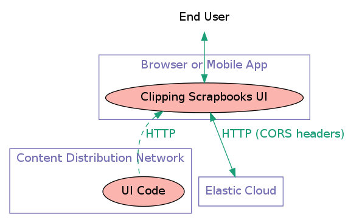
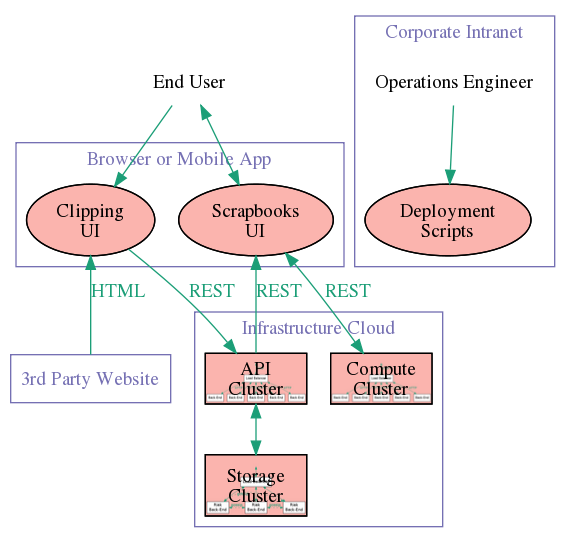

Building an Internet-Scale Web Clipping System
A Case study, by Eamonn O'Brien-Strain
Goal of this talk
- So you have some amazing algorithms ...
- So you have a great idea for an application targeted at
millions of users ...
- But you are a bit hazy about this whole cloud thing ...
Explain by Example how to build cloud application
User Problem
The Web is a big place
- How to track and organize the useful stuff I
find?
- How to get back to an old page? Maybe it's
deleted?
- How do I share what I found privately?
HP Clipper
a browser add-on for collecting, organizing, and
using clippings of web content
You can try it
at http://www.hpclipper.com/
Originated in HP Labs
Clipper ...
- builds upon the Smart Print algorithms
(that cleans up web pages for a better printing).
- adds the capability to save the cleaned-up web
page in the cloud.
Must handle large crowds of users
- Everyone surfing the web is a potential user.
- Our architecture should have flexibility to handle
Internet-scale.
- But is should be economical as we ramp up from small base.
What are Public Clouds?
Three levels:
- Application end-user web or mobile
service. Used by everyone
- Platform deployment and
execution environment for some particular software
framework. Used by software engineers
- Infrastructure virtual hardware and
network resources. Used by deployment and
operations engineers
We built upon a public Infrastructure Cloud
Public release will be on HP Public Cloud. (Comparable to
Amazon Web Services.)
- Pay for just what you use.
- Get started or pivot very quickly (e.g lean start-up or
agile development).
- But ... at very large scale, likely to be more expensive than a
private solution.
Architectural Pattern:
Horizontally-Scalable Stateless Back-ends
- Load balancer distributes HTTP requests amongst
back-end servers
- identical back-ends
- stateless back-ends: HTTP requests spray
arbitrarily
- virtual instances in an
infrastructure cloud
- spin-up new instances when demand increase
- spin-down instances when demand reduces
Architectural Pattern:
Horizontally-Scalable
Storage Cluster of NoSQL Peers
- no
master
: all the back-ends are equal peers
- sharing data amongst themselves with redundancy
- automatically handles adding and removing of peers.
(We use Riak.)
Operations Pattern:
Throw-Away Instances
Pattern:
- never modify a server once it has been deployed
- instead spin-up new instance and terminate old one
Advantages:
- can button-down security tightly (no shell login)
- don't have to write upgrade scripts
- never dependent on any particular instances
- avoid
software rot

Dev-Ops: Turning Operations into Code
deploying to the cloud using scripts
minimal of manual involvement in deploying code
scripts to
- spin-up server
- install dependencies
- install our software
- start our software running

Ultimate Scalability
The UI Code is JavaScript (plus HTML5 and CSS)
hosted statically
Code runs in the user's browser using user's CPU
Modeling Usage and Projecting Cost

- Identify important parameters to monitor
- Just a starting point
- need to add networking cost
- need to account for skewed distributions

Putting it all together
- API Clustercentral API
- Storage Cluster NoSQL
- Compute Clustersstateless
- Clipping and Scrapbooks UI clip action and
scrapbook browsing
Software Stack
We picked the Open Source stack of Linux and Java,
because of developer familiarity, avoidance of purchasing
bureaucracy, and availability of cutting-edge technologies.
Others might have chosen the Microsoft stack if
their developers were from that culture and they valued the
better tooling and clarity in technology choices.
Software Architecture
- UI Code in HTML5/CSS and Coffeescript compiled
into JavaScript on JQuery framework
- API Server in Java on Play Framework (more
lightweight than J2EE)
- Java Compute is Play Framework,
container for Java web thunks.
- Native Compute is Apache/PHP container for
native web thunks.
API Server

Just model and controller
Agile Development
Scrum
- Product Owner, Scrum Master
- Work driven by user stories
- Estimate in story points
- Measure velocity
- Daily stand-ups
- Two-week Sprints
Engineering Practices
- Full-Stack Dev/Ops Team
- Test-Driven Development
- Continuous Integration
- Fearless Refactoring
- Shippable anytime
Credits
Many scores of people have contributed to the technology
behind Clipper or were part of the effort to bring it to the
public. They include Yi Li, SukHwan Lim, Qian Lin, Jerry Liu,
Peter Shanley, Xuan Zhou
You can try it
at http://www.hpclipper.com/
Photo Credits (Creative Commons):
LOGO2.0 part I and II by Ludwig Gatzke, and
Melbourne Sound Relief - Raincoat Brigade by alexkess
←
→
/
#